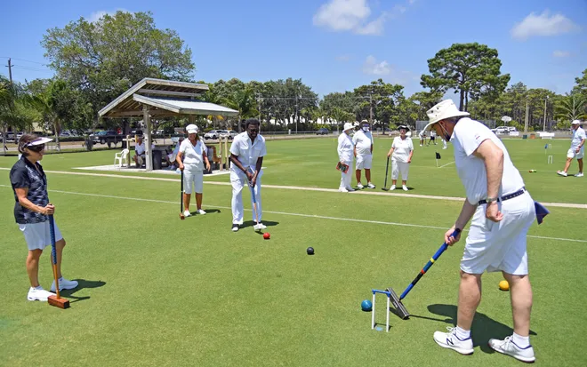

Welcome to Croquet at Mill Lake Park
Welcome to Our Club
Join us for croquet at the beautiful Mill Lake Park facility, where the Abbotsford Lawn Bowling Club now offers croquet as an exciting addition to their sporting activities.

Regular Play Sessions
- Tuesday and Thursday evenings at 6:00 PM
- April through September
- Open Houses and Tournaments on selected Saturdays
What We Offer
- Professional lawn facilities
- Complete sets of croquet equipment
- Instruction from experienced players
- Both casual and competitive play opportunities
Join Our Community
Whether you're new to the sport or an experienced player, we invite you to join our growing croquet community.